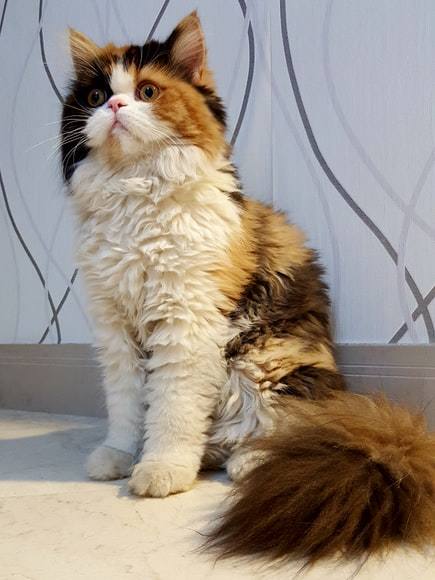
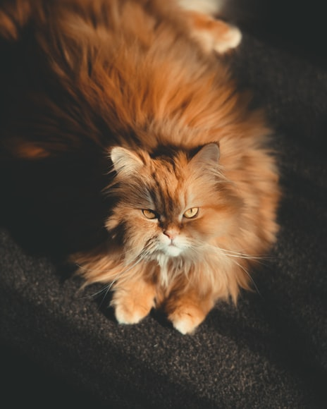

Gato Persa
Da família Felis catusAcredita-se que eles existiam na Pérsia Antiga, onde atualmente é o Irã. Talvez não saiba, mas o preguiçoso gato Garfield, é da raça Persa.
O que chama atenção em sua aparência é sua pelagem longa e seu focinho achatado, cabeça bem redonda, cauda curta e olhos grandes. É um
O peso e tamanho dos lobos variam muito em todo o mundo, tendendo a aumentar proporcionalmente com a latitude, como previsto pela teoria de Christian Bergmann. Em geral, a altura, medida a partir dos ombros, varia de 60 a 95 centímetros.
O peso varia geograficamente. Em média, os lobos europeus pesam 38,5 kg; os lobos da América do Norte, 36 kg; os lobos indianos e árabes, 25 kg.[7] Embora raros, lobos com mais de 77 kg foram encontrados no Alasca, Canadá,[8] e na antiga União Soviética.
“Não se deve confundir preguiça com apatia. Nós, os preguiçosos não somos apáticos. Os apáticos não se interessam por nada. Nós, pelo contrário, interessamo-nos, apenas não fazemos nada a respeito.”
- Surgiu: 2.000 anos
- Tipo: Mamífero
- Idade média: 15 anos
- Macho adulto: 5 - 8Kg
- Fêmea adulta: 2 - 3Kg
- Família: Felídeos
É um sobrevivente da Era do Gelo, originário do Pleistoceno Superior, cerca de 300 mil anos atrás.[2] O sequenciamento de DNA e estudos genéticos reafirmam que o lobo cinzento é ancestral do cão doméstico.
É um sobrevivente da Era do Gelo, originário do Pleistoceno Superior, cerca de 300 mil anos atrás.[2] O sequenciamento de DNA e estudos genéticos reafirmam que o lobo cinzento é ancestral do cão doméstico.